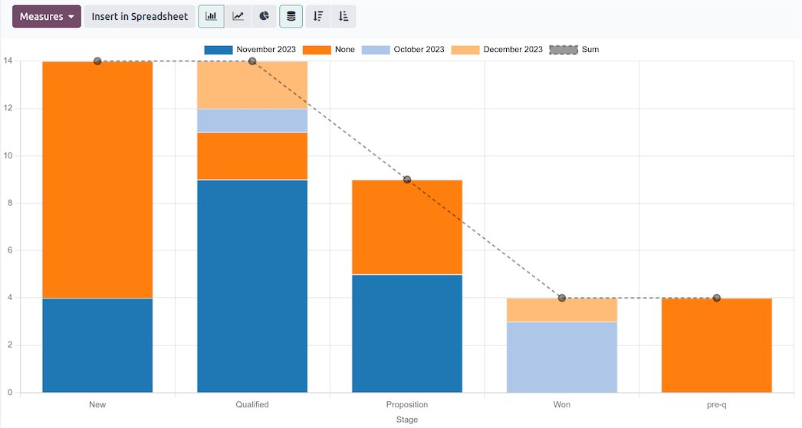

Dead Brands Services
Your Pipeline Is Lying to You. Here’s How to Fix It.
Most sales pipelines aren’t forecasts — they’re wish lists with dollar signs. Here’s how to tell the difference, and how to build a pipeline that tells the truth.
The anatomy of a lying pipeline
I can spot a lying pipeline in about sixty seconds. The symptoms are always the same: deals that haven’t moved in months but are still “active,” stage names that describe what the rep did instead of what the buyer did, close dates that slide every single week, and a total at the bottom that’s roughly triple what will actually close.
Nobody’s being dishonest on purpose. Reps are optimistic by nature, and most pipelines are built on vibes instead of evidence. The fix isn’t motivation — it’s structure.

Fix one: define stages by buyer action, not seller hope
“Proposal sent” is a seller action. It tells you nothing about whether the deal is real. A stage should only advance when the buyer does something: confirmed the budget exists, introduced you to the decision maker, agreed to a timeline, reviewed the proposal with their team.
Rewrite your stages as buyer commitments. Overnight, half your pipeline will slide backward a stage or two — and for the first time, the number at the bottom will mean something.
Fix two: make every deal earn its place
Every stage needs exit criteria: the specific, verifiable things that must be true before a deal moves forward. Budget confirmed? Decision process mapped? A real close date the buyer agreed to, not one the rep invented?
And here’s the part people skip: deals that stop meeting the criteria get moved back — or out. A pipeline full of zombie deals isn’t just inaccurate, it’s expensive. Your reps spend their week nursing corpses instead of hunting live ones.
Fix three: separate the forecast from the pipeline
The pipeline is everything you’re working. The forecast is what you commit to close. They are not the same number, and mixing them up is how companies miss quarters.
A forecast should be a short list of deals with verified criteria and buyer-confirmed timelines. Everything else is pipeline — real work, real potential, but not something you bet the quarter on. The discipline of keeping those two lists separate is half the battle.
Fix four: discovery is the whole game
Every pipeline problem is really a discovery problem. Deals go stale because nobody confirmed the pain was urgent. Forecasts miss because nobody mapped the decision process. Reps chase ghosts because nobody asked the hard questions early — who else is involved, what happens if they do nothing, what does “yes” actually require.
Good discovery isn’t interrogation. It’s curiosity with a purpose: understanding the buyer’s world well enough to know whether your solution belongs in it. Do that right and the pipeline mostly takes care of itself.
Where I fit in
I’m David Strausser. I’ve run sales organizations, carried quotas, and sat in the forecast meetings where the numbers didn’t add up — then fixed the process underneath them. When I work on a pipeline, I don’t bring motivational posters. I bring stage definitions, exit criteria, a weekly hygiene ritual your team will actually follow, and the uncomfortable questions that make the numbers honest.
Go deeper
The full sales expert guide
This page is the overview. The full guide covers how I audit a sales process, what a rebuild engagement looks like, and the difference between fractional sales leadership and a one-time pipeline fix. If your forecast has surprised you lately, read it.
Frequently asked questions
Do you do fractional sales leadership, or one-time projects?
Both. Some companies need the full build — audit, pipeline, playbooks, then handoff. Others need an ongoing hand on the wheel: weekly pipeline reviews, rep coaching, forecast calls. We’ll figure out which one fits on the first call.
Will this work with my CRM?
The process comes first; the tool serves the process. I’ll work with whatever CRM you’re on — the stage definitions, exit criteria, and hygiene rituals translate. If your CRM is actively fighting you, we’ll talk about that too.
How long until the pipeline is trustworthy?
Faster than you’d think. The audit and rebuild usually surfaces the truth within a few weeks — most teams already know which deals are real, they just haven’t been allowed to say so. Building the ongoing discipline takes a quarter of consistent rhythm.
Want a pipeline that tells the truth?
Thirty minutes. Bring your pipeline — I’ll show you where it’s lying.